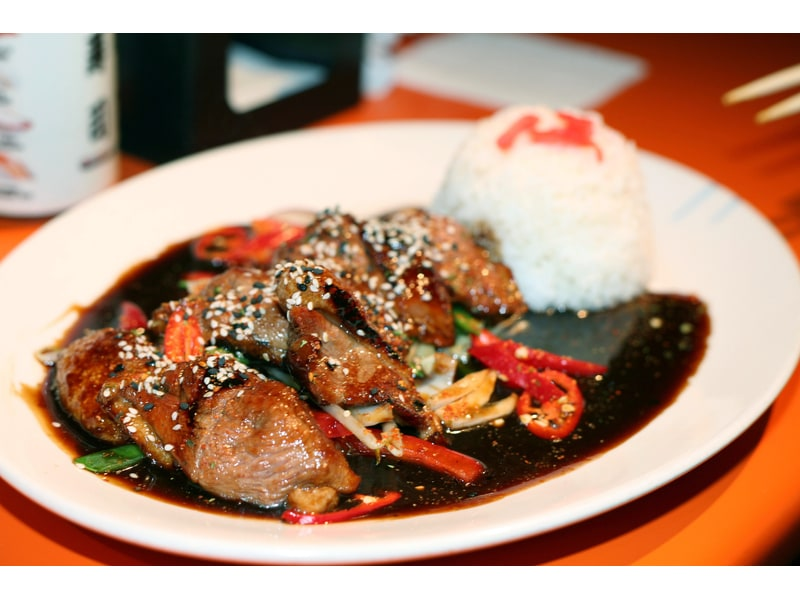

Sosy
Sos teriyaki
Sos teriyaki: 3 g białka, 120 kcal, 24 g węglowodanów i 0 g tłuszczu na 100 g. Kategoria: Sosy.
Kalorie120 kcalna 100 g
Białko / proteiny3 g
Węglowodany24 g
Tłuszcz0 g
Cena (szac.)~2,00 złza 100 g
Ceny zaktualizowano: maj 2026 (szacunek — ceny w popularnych supermarketach)
Porcja: łyżka (15g)
| Kalorie | 18 kcal |
|---|---|
| Białko | 0.4 g |
| Węglowodany | 3.6 g |
| Tłuszcz | 0 g |
| Cena (szac.) | ~0,30 zł |
Szczegółowe składniki odżywcze na 100 g
| Wartość energetyczna (kalorie) | 120 kcal |
|---|---|
| Białko (proteiny) | 3 g |
| Węglowodany | 24 g |
| Tłuszcz | 0 g |
| Tłuszcze nasycone | 0 g |
| Tłuszcze nienasycone | 0 g |
| Witaminy i minerały | Sód, Potas, Witamina C |
| Współczynnik kcal / 1 g białka | 40.0 |
| Cena produktu (szac. za 100 g) | ~2,00 zł |
| Cena za 100 g białka (szac.) | ~66,67 zł |